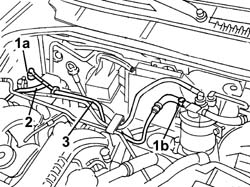

1040B58 fuel return line from injection pump to filter - r r
- Path
- Procedures > 10 ENGINE > 1040 FUEL TANK AND PIPES > 1040B FUEL SUPPLY/RETURN CIRCUIT PIPE > 1040B58 fuel return line from injection pump to filter - r r
- Kind
- repair procedure (removal / refitting; the operation number is the code)
- Applies to
- all engines; all production periods
- Interactive page
- https://sloeber94.github.io/elrnDB-fDbl/en/#/2584451
Applies to: all engines; all production periods
 Removing
Removing
 Refitting
Refitting1. Disconnect the pipe from rapid attachment (1a) on the injection pump and from band (1b) on the fuel filter.
2. Disconnect the injector recirculation pipe
3. Remove the pipe from the engine compartment.

Applies to: all engines; all production periods
Refitting
RemovingFit the pipe and connect the ends to the fuel filter and injection pump.
Connect the injector recirculation pipe.